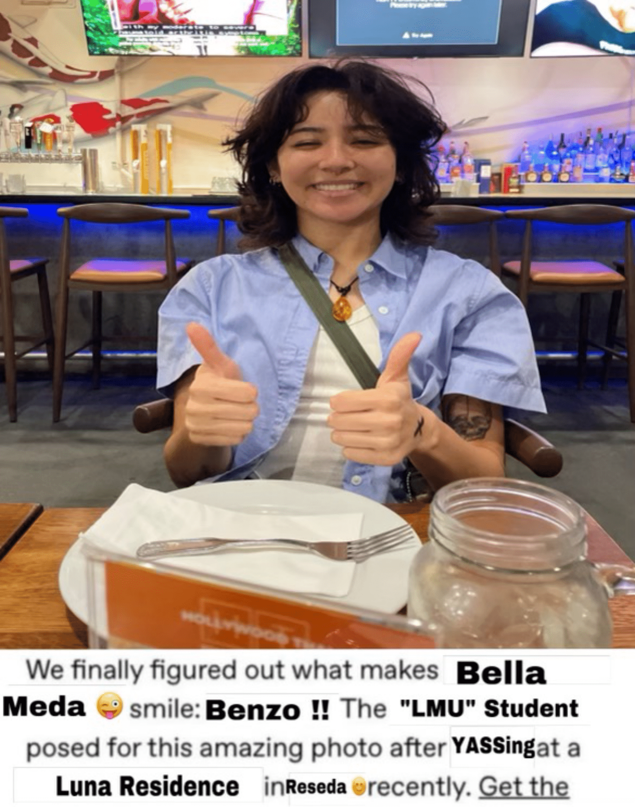

Catalina Barnes
Hello! I am the front-end creator of TranquilU! This web app was created in 8 hours during LMUHacks 2024. As someone's who has dealt with anxiety since childhood, I know what it's like to constantly worry about nagging responsibilites throughout the day. As a college student, I understand how difficult it can be to balance prioritizing your overall well-being along with completing assignments. With TranquilU, Bella and I hope to bring easily-accessible and quick-to-use mental health resources to make your day easier. I believe good mental health is the key to succeeding not only academically, but also flourishing in the activities you love.

Izabella Meda
Hey! I am one of the co-creators of TranquilU, created during the LMUHackathon 2024! As someone who has dealt with the juggle of mental illness and everyday life, I understand how difficult it is to maintain a strong academic standing while also worrying about my own wellbeing. I always felt like resources were so hard to find, especially ones targeted towards self-improvement without a paywall! I hope this project can inspire other students to prioritize their mental health over all.
